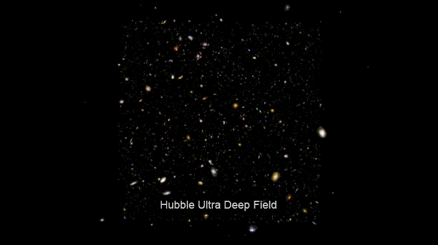
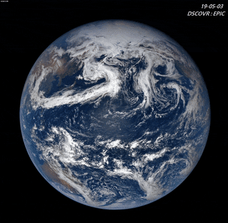
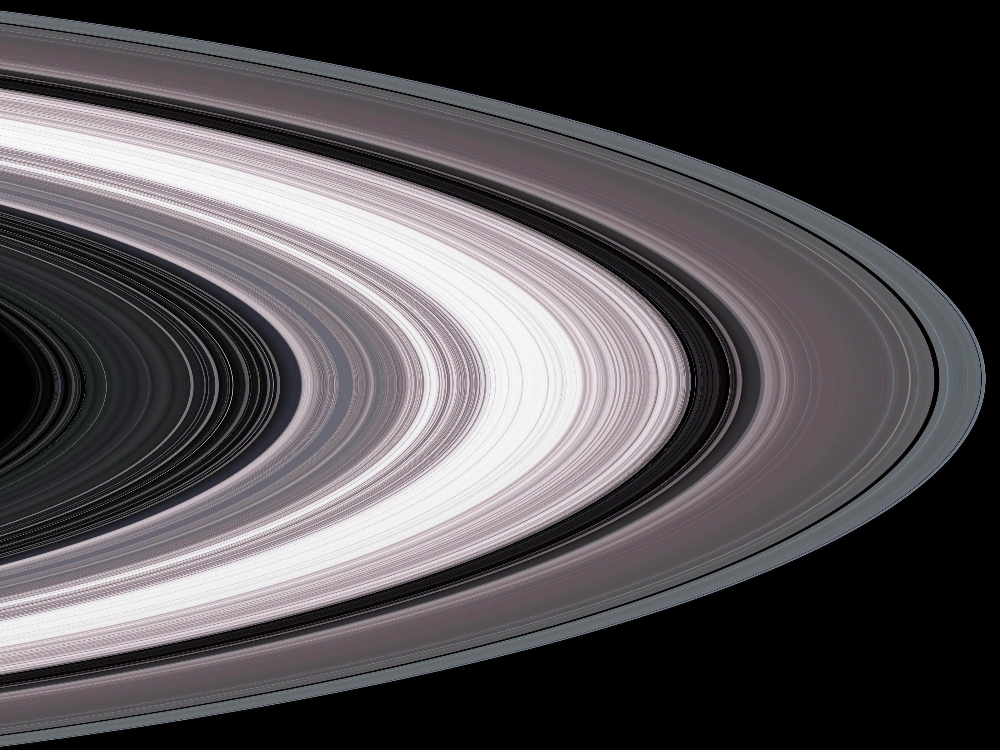
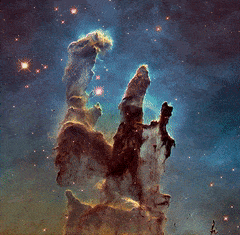
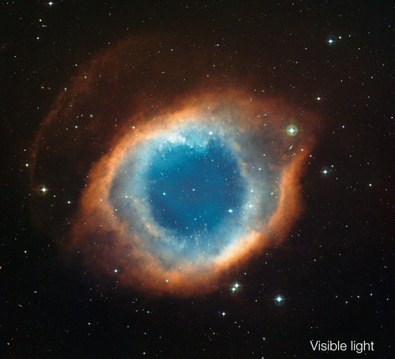

Esta foto foi tirada pelo Telescópio Espacial Hubble em 1995 e mostra um pequeno pedaço do céu contendo milhares de galáxias. Cada um dos pontos na imagem representa uma galáxia, algumas das quais estão a bilhões de anos-luz de distância. A imagem fornece um vislumbre da vastidão do universo e do incrível número de galáxias que existem além da nossa.
Esta famosa foto foi tirada pelos astronautas da Apollo 17 em 1972 e mostra a Terra em toda a sua beleza. A foto foi tirada a cerca de 28.000 milhas de distância e captura todo o planeta em uma única tomada. A foto é um lembrete da fragilidade do nosso planeta e da importância de cuidar dele.
Esta foto foi tirada pela sonda Cassini em 2017 e mostra os anéis de Saturno de perto. Os anéis são feitos de bilhões de partículas de gelo, variando em tamanho de pequenas manchas a pedras maciças. A foto mostra o intrincados padrões e estruturas dentro dos anéis, que ainda não são totalmente compreendidos pelos cientistas.
Esta foto foi tirada pelo Telescópio Espacial Hubble em 1995 e mostra uma região de gás e poeira na Nebulosa da Águia. Os pilares são estruturas maciças de gás e poeira, cada um com vários anos-luz de comprimento, e acredita-se que sejam locais de formação estelar ativa. A foto é um exemplo impressionante da beleza e complexidade do universo.
Esta foto foi tirada pelo Telescópio Espacial Hubble em 2003 e mostra uma estrela moribunda no processo de descamação de suas camadas externas. A foto mostra os intrincados padrões e formas do gás e da poeira ao redor da estrela, que criam um efeito visual impressionante. A foto é um lembrete das forças incríveis que atuam no universo e do ciclo de nascimento e morte subjacente a tudo.
